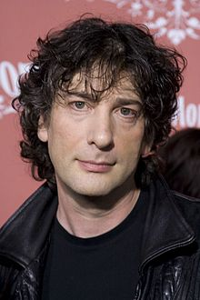
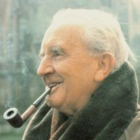
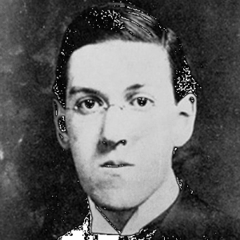
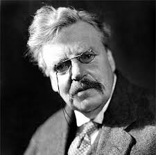

|  |
NEIL GAIMAN |
Autor británico de fantasía residente en los Estados Unidos, Neil Gaiman nació el 10 de noviembre de 1960 en Portchester (Inglaterra) en el seno de una familia judía de origen polaco.Gaiman comenzó su carrera como escritor en los años 80 después de dejar los estudios y trabajar como periodista. |
|  |
J. R. R. TOLKIEN |
Escritor británico de origen sudafricano mundialmente conocido como autor de El señor de los anillos (1954-1955), un verdadero clásico de la literatura fantástica. Aunque el autor ya era sobradamente conocido, en fechas recientes su obra ha alcanzado una difusión todavía mayor gracias a las adaptaciones cinematográficas de Peter Jackson. |
|  |
H. P. LOVECRAFT |
Howard Phillips Lovecraft nació el 20 de agosto de 1890 en Providence, Rhode Island (Estados Unidos). Era hijo único del comerciante Winfield Scott Lovecrat y de Sarah Susan Phillips, una mujer llena de problemas psicológicos que traspasó a su sobreprotegido hijo.
Winfield comenzó a ver alucinaciones y le diagnosticaron paresis general, falleciendo en 1895 en el Butler Hospital de Providence. Después de su muerte, Susan se mudó con su retoño a casa de su padre, llamado Whipple Van Buren Phillips.
El pequeño Howard creció entre libros, enfermizo y solitario. Padecía terribles pesadillas, muchas de ellas le sirvieron de sostén para sus imaginativas historias de terror y misterio. |
|  |
G. K. CHESTERTON (1874-1936) |
G. K. (iniciales de Gilbert Keith) Chesterton nació el 29 de mayo de 1874 en Londres (Inglaterra), hijo de Marie-Louise Chesterton y de Edward Chesterton, quien trabajaba en la sala de subastas Kensington.
G. K. se instruyó en dibujo y pintura en la Slade School of Art y en la University College. En el año 1895 abandonó sus estudios para dedicarse al periodismo, una actividad que ya había principado en su adolescencia realizando publicaciones amateur.
En este período de su vida, confuso tanto en su futuro profesional como espiritual, Chesterton comenzó a coquetear con el mundo oculto, realizando habituales sesiones con la ouija.
Colaboró en la parte final del siglo XIX con los editores Redway y T. Fisher Unwin, y publicó sus primeros relatos en diversas revistas, entre ellas la suya, “G. K’s Weekly”. |